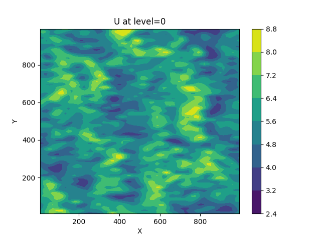
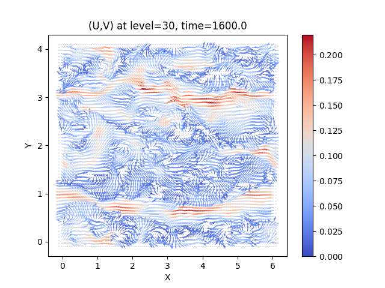

nse-python¶
This is the documention of nse-python project. It provides python tools for processing the output of nse projects.
Installation¶
Download nse-python with git and install with pip
git clone http://tesla.parallel.ru/vonopr/nse-python.git
cd nse-python
pip install .
Usage¶
nseplot2d¶
You can create 2d plots from .plt and .nsq
files with nseplot2d utitlity. Assume that you have plt-3d/velocity-2.plt file with U,V and W variables.
Run command
nseplot2d plt-3d/velocity-2.plt U
to achieve an image velocity-2_U_z0.png:
{kind=link}
You can set Z-level with --z0 option. Also, you can adjust the image title,
axes label and colormap with options --title, --xlabel, --ylabel
and cmap.
nseplot2d plt-3d/velocity-2.plt V --z0 30 --cmap speed --title "Check this colormap"
{kind=link}
nseplot2d binary-3d/temperature-init.nsx Temperature --cmap coolwarm --xlabel "X, km" --ylabel "Y, km"
{kind=link}
To get list of available color maps run nseplot2d with --cmaps
options. To get help message use --help option.
nseplotvec¶
To plot velocity vector with nseplotvec at 30-th depth level run
nseplotvec binary-3d/velocity-init.nsx U V --z0 30
An image velocity-init_UV_z30.png will be produced.
{kind=link}
The grid resolution is rather high. It makes the plot bloated with arrows.
To skip drawing every second arrow along X and Y axis run nseplotvec
with --skip option:
nseplotvec binary-3d/velocity-init.nsx U V --z0 30 --skip 2 2 -o vec_skipped.png
{kind=link}
Adjust the plot with options: --title, --xlabel, --ylabel, --cmap.
nseplotvec plt-3d/velocity-2.plt U V --cmap viridis --title "My title" --xlabel "My X axis label" --ylabel "My Y axis label" --skip 3 3
{kind=link}
To get help message use --help option.
nseplot1d¶
To create a plot of timeseries contained in a .dsq file series/energy.dsq run
nseplot1d series/energy.dsq
This will produce an image energy.png inside your current working directory:

To create a plot from timeseries contained in a .plt file you must
provide --nzone argument. For single zone files it must be 0,
for multizone it is less or equal number of zones in file minus one.
Also in contast with .dsq case, for .plt file you must provide --vars
option. It supports regular expression, to plot all variable in the file
pass --vars='.+'.
The command below
nseplot1d plt-1d/-TKE(z)-balance-12.plt --nzone 0 --vars "TKE.+"
generates file -TKE(z)-balance-12.png with all variables which names start with “TKE”.
-balance-12.png){kind=link}
The file plt-1d-multizone/U-1.plt contains two zones.
nseplot1d plt-1d-multizone/U-1.plt --nzone 0 --vars ".+"
nseplot1d plt-1d-multizone/U-1.plt --nzone 1 --vars ".+"
{kind=link}
{kind=link}
To get information about nseplot1d usage run it with --help flag:
nseplot1d --help
For other examples check our collection of nseplot1d usage cases.